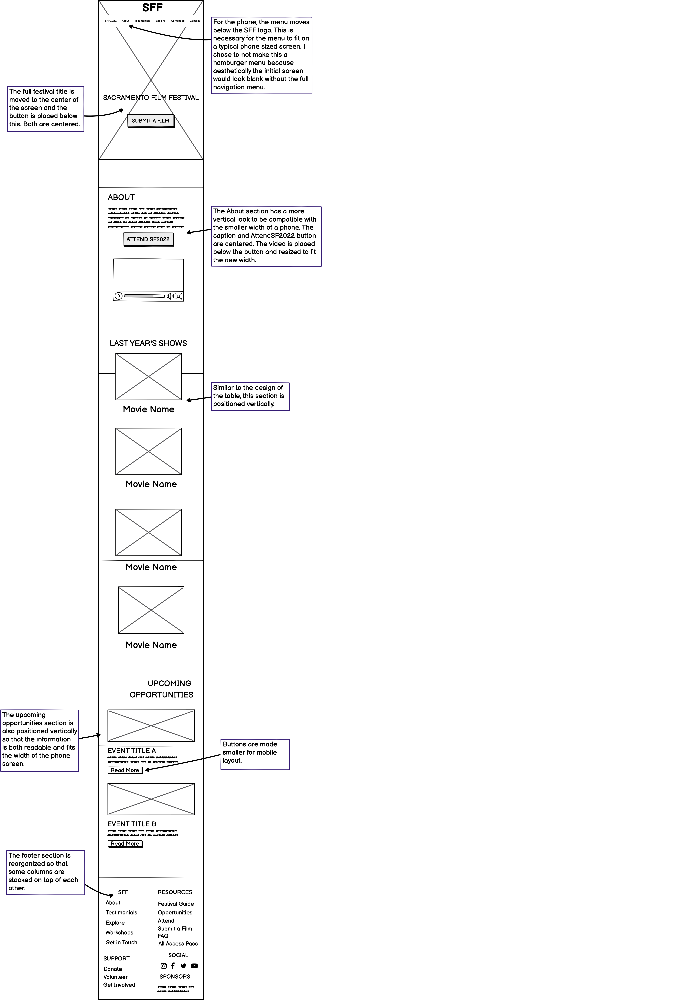

Redesign of the Sacramento
Film Festival Website
I chose a simple website to redesign-- making improvements in the usability, learnability, and memorability. My objective was to practice the workflow of redesigning a simple website by creating low-fidelity and high-fidelity prototypes for different screen sizes.

Each year, my hometown puts on a film festival to showcase the art of our local filmmaking community. In high school, my friends and I visited the website for the Sacramento International Film Festival. We found it extremely confusing to navigate, thus, deterring us from wanting to attend or appreciate such a meaningful event. Considerable effort and time are put into hosting local film festivals, so for this reason, I chose to redesign this website. A user-friendly website is essential to encouraging both attendance and recognition for all the independent artists involved in the event. The original website can be found here.

Usability Problems.
- Usability
- Cluttered Layout— The many different type sizes, type weights, typefaces, and colors on the webpage causes visual pollution. Thus, discouraging users from wanting to continue navigating the page. If these elements were used more intentionally, they could be more effective in portraying important information to users.
- Confusing navigation– There is a navigation at the top of the page below the header. At the same time, there seems to be another navigation section with links to submit a film, news, social media links, and upcoming shows. These could be combined to make it easier for visitors to know where to click next.
- The main reasons a user would visit this site is to submit a film, attend the festival, or learn more about the festival. However, the current design makes it inconvenient for users to complete these wants. It would be helpful to make it easy and obvious how the user can achieve these goals.
- Efficiency
- Absence of visual hierarchy– The minimal use of whitespace makes it difficult for users to grasp basic information about the film festival. It is hard to discern the sections of the page which causes visitors to spend more time deciding what they should click or look at next. By altering the size and grouping of page elements, users can be naturally guided to the most crucial components. This adds to the time users take to find what they need from the website.
- Learnability
- Unclear UI– The image carousel captures the attention of users at first glance. It is unclear how to interact with this carousel until the user plays around with it. The carousel does not automatically transition between cards, so for the next image or previous image card to show up, users must click the desired image. It is also unclear that clicking on the center image card opens a link to a new tab, which could be frustrating for users when they are redirected unwillingly.
- Memorability
- Even though the layout is confusing, the site does not have severe memorability issues because there are only a few components overall.
- After users navigate through the page for a few minutes, it would be relatively easy to remember which UI components perform certain functions.
- Conceptual Model
- Inconsistency– There is no consistency in the UI design. For instance, because the buttons are not uniform it makes it harder for the user to know which elements are clickable. The UI components don’t behave in the same way so the user does not feel a sense of familiarity or control with how to interact with the page.
- It does not seem like a lot of the design choices were intentional. It would be helpful if the site had a comprehensive mapping of subpages or nested elements.
Accessibility.
The WebAIM WAIVE website found 13 contrast errors, 1 error, 25 alerts, 15 features, 34 structural elements, and 73 ARIA.
There was an alert for a skipped heading level. Headings provide structure for the page and facilitate keyboard navigation for users who need assistive technology. This makes the site more confusing for users that need to use assistive technology like a screen reader. Furuthermore, the text is very small in some areas like the Last Year’s Show section. This makes it difficult for people with low vision to read. There are also a fair amount of contrast errors– meaning that there is extremely low contrast between text and background colors. As a result, it could be frustrating for users, especially those with low vision, to read or distinguish text. I agree with the findings of WebAIM WAVE. The currrent Sacramento International Film Festival website is not the most accessible for all users.
Low Fidelity Wireframing.
Desktop

Tablet

Phone
Visual Design Style Guide.
High-fidelity Prototype.
*Hover and scroll over the screen or open the Figma link to interact with the prototype*
Desktop
Annotations regarding design for the desktop:
- Each section is using the flexbox layout in order to split up parts of the screen. Past the banner area, each section has the same padding for consistency.
- Banner Area: Uses @keyframes to have crossfade transition between multiple background pictures. Content in flexbox is set to justify content: flex-start
- About Area: Split up into two different divs-- about-left and about-right. The left div is set to flex-basis of 55% while the about-right div is set to 45% so that the text caption takes up more space.
- Last Year's Shows Area: There is a padding of 50px for the content in this section and the flexbox row content has justify-content set to space-around.
- Upcoming Opportunities Area: This section has the flex direction set to column so that each opportunity image and caption is aligned vertically.
- Footer Area: Split up into 5 different column divs and placed in a flexbox with the flex direction set to row.
Tablet
Annotations regarding design for the tablet:
- This layout starts making use of media queries to change font size, flex direction, and padding so that the UI elements fit better.
- Banner Area: Similar to the desktop layout, use @keyframes to have a crossfade transition of multiple pictures. Using media queries, the logo and navigation menu font is made smaller to better fit the screen size.
- About Area: The size of the video media is made smaller in order to better fit in the flexbox. Max-width is set to 100% so that it does not overflow.
- Last Year's Shows Area: The flexbox direction is set to column, so that the videos and captions are now stacked on top of each other.
- Upcoming Opportunities Area: The flexbox direction remains the same here but the padding is made smaller for the content and the font size is changed as well.
- Footer Area: The footer padding is also decreased using responsive media queries.
Phone
Annotations regarding design for phone:
- Because the phone layout width is much smaller, significant use of media queries is necessary in order to fit everything on the screen in a clean manner.
- Banner Area: The flex direction of the navigation menu and logo is switched to column so that these elements are now vertically aligned. The same is done for the title and the button.
- About Area: The components here are made smaller to fit the space and they are stacked on top of each other.
- Last Year's Shows Area: Similar to what was done for the tablet layout, these are vertically stacked and the font for the captions are made smaller.
- Upcoming Opportunities Area: The images are resized to fit the screen without causing positioning complications with other elements. This is achieved by using max-width: 100% and height:auto.
- Footer Area: Some footer sections are pushed down to fit the screen.
.gif)
Conclusion.
The Sacramento International Film Festival website was redesigned by adding a visual hierarchy, using consistent design choices fr the same components, moving around the layout, adding visual media like photos relevant to written content, and creating a universal navigation menu. Going through this workflow allowed me to better understand how to identify design problems, how to improve such pain points, and how to actually code a responsive design. Furthermore, I learned how to create and annotate lo fidelity and high fidelity prototypes. If I did this project again, I would play around